Game Boy · assembly · raster tricks
F-Sub: an F-Zero Hover-Racer on the Game Boy
F-Sub is an F-Zero-style racer for the original Game Boy. The race shows a perspective road that bends with the track, and a skyline in the distance, by rewriting hardware registers on every scanline. The Game Boy has just enough memory, CPU time and free sprites for 7 computer-controlled rivals, or a friend over the link cable plus 4 rivals.
Play it in your browserSource on GitHub
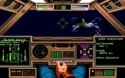
What F-Sub is
I have played F-Zero since its debut on the Super Nintendo, but it always left two holes in my heart: it did not work on my Game Boy, and I could never race against real people. I would dream of plugging in a link cable to my Game Boy and challenging my friends. I recently learned the quirks of the Game Boy's Z80-like assembly language, and I was surprised by the uncommon power of the Game Boy's picture processing unit (PPU). Yet, a racing game seemed out of reach without the ability to scale or rotate the background. Then one day I realized that an infinite road could be a single unchanging background image and that the game could change SCX, the register that sets the background's x-offset, by a different amount as each scanline was drawn, curving the road. F-Sub, my dream of an F-Zero-style racer for the original Game Boy, was no longer impossible.
When F-Zero was released in 1990 for the SNES, it was lauded for its extensive use of the Mode 7 graphics mode. F-Zero re-aimed the ground on every scanline to make an active ground plane for the player to hover over. The SNES had a 16-bit processor running at up to 3.58 MHz that took at least 2 cycles per instruction, plus a hardware multiplier that took 8 cycles.
In contrast, the 8-bit Game Boy processor ran at 4.19 MHz, but took at least 4 clock cycles per instruction and had no multiply instruction. Because it worked on 8-bit words, it was substantially slower than the SNES. The Game Boy had a single scrolling background layer comprised of 8x8 tiles (plus the window, which comes up later), up to 40 sprites of 8x8 or 8x16 pixels, and no way to draw individual pixels.
Despite these limitations, F-Sub (one less than F-0) is a homebrew racer written from scratch for the previous generation: the Game Boy. It manages the effects of bending roads, a city tearing past left and right, and other hovercraft with their own paint jobs, edging each other out for first place. On each of the four built-in race tracks, F-Sub runs at 60 fps with no dropped frames in eight test races, with peak CPU use of 78–83%. In two-player link mode, each console drives two rivals of its own and shows the other console's two, so the field is you, your friend and four rivals. The whole game is fewer than 5,000 lines of assembly (4,974 today, plus the hUGEDriver music player) and fits on a 256 KB homebrew ROM.
The main idea is that almost nothing in video memory changes: only the status bar, and one tile when the player crashes out. Instead, BGP, SCX and OBP1 are rewritten during the horizontal blank after each scanline is drawn on the LCD. The illusion of motion comes from how these registers change both the shape of the background image and the color of each pixel, so that the textures can move vertically at the same time as the overall shape is bending and arcing left to right.
The individual techniques are discussed with more nuance below.
A static picture that appears to rush by
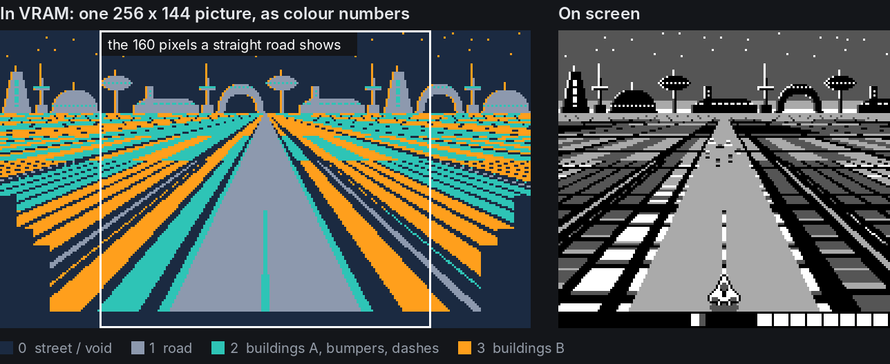
In F-Sub, the background holds a single 256x144 picture (32x18 tiles). To display the illusion of driving, the only thing needed was a straight road running to a vanishing point with city blocks on either side, which seem to stream toward the camera, faster near the bottom of the screen. A simple Python script rendered the long road at build time to be saved out in the ROM. During the whole race, only the 20 status-bar cells of the window's map are ever rewritten (and one spare sprite tile during a game-ending wreck).
Instead of having the background picture store 4 shades of gray, the background stores the kind of object being painted at that part of the screen. This gives a textured paint-by-the-numbers design for the game to render. The numbers:
- 0 is street or void
- 1 is road
- 2 is building set A (plus bumpers and roadway lane dashes)
- 3 is building set B
During the drawing of each scanline, the numbers are painted to a particular shade of gray for that scanline. This lets depth and motion factor into the color being drawn. The perspective divide is pre-computed into the art itself: background row d (1 at the horizon, 104 at the bottom) shows the world at depth 16640 / d, sampled at 104 / d world units per pixel. Far rows are supersampled 7x and majority-voted so thin streets are visible.
Since the background, 256 pixels wide, is wider than the display area of just 160, there is room to allow leeway for the image to bend or contort. This is used to show the upcoming curves in the road ahead or the camera and hovercar sliding sideways. Note that the ragged dark corners in the picture are simply inaccessible for even the sharpest curve in any race track.
Several of the registers are updated actively as the image is being scanned out. The BGP (background palette) synthesizes a forward motion effect. SCX (horizontal scroll) pushes the background left and right to draw bends in the road and allow the player to slide and steer. OBP1 (one of the two sprite palettes) paints the rival hovercars with the correct color for that car.
This technique may be applicable to other consoles or legacy systems if the camera keeps a fixed pose over a ground plane.
- To reuse: The plane may be drawn a single time in perspective and animated with per-line register writes. Since most tile-based consoles allow palette and scroll changes between scanlines, the technique may be applicable to consoles such as the Mega Drive, Master System, Game Gear and TurboGrafx-16. (The SNES and Game Boy Advance don't need it: they can rotate and scale a background in hardware.) Unfortunately, while the NES can scroll per line, it makes frequent palette changes difficult. Specifically the NES would require disabling and restoring the PPU state, and the horizontal blanking time is too short for the obvious approach.
How a port to the NES might look
For the NES, a promising approach could be to store recolored copies of the road tile data in CHR ROM and switch copies every scanline. That way, instead of changing the palette, it could simply be a mapper write. A 512-pixel-wide road, 104 scanlines tall, requires 208 KiB of CHR ROM in total: 13 KiB for each of the 16 combinations of the two animated building colors.
phase[y] = cityPalette[(distance + depth[y]) & 255] bank[y] = 16 * (y >> 3) + phase[y] scroll[y] = 128 + bend[y] + cameraShear[y]
Then for each horizontal row:
.macro RASTER_LINE ncycles
lda (scroll_ptr),y ; Load the horizontal scroll value set for row Y.
sta PPUSCROLL ; Write it to $2005 to set horizontal scroll.
bit PPUSTATUS ; Make the next write to $2005 actually set horizontal scroll again.
lda (bank_ptr),y ; Load the bank number for the row's recolored background.
sta MMC3_DATA ; Write it to $8001, selecting the bank supplying the background graphics.
iny ; Advance to the next Y row in the table
.if ncycles = 113 ; Pad the block with nop, so the macro burns the correct amount of time.
bit delay_dummy ;
.repeat 43
nop ; 86; padding total 89
.endrepeat
.elseif ncycles = 114
.repeat 45
nop ; 90
.endrepeat
.endif
.endmacro
Speed from palettes (BGP)
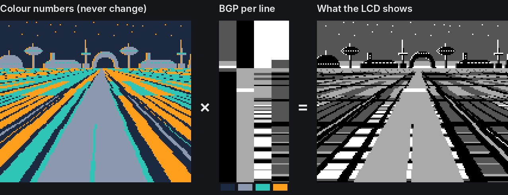
For the Game Boy, the entire palette is contained in the single 8-bit BGP register (2 bits for each of the four color numbers), which carries which of the four shades of gray each color maps to. Many games set it once per level, but F-Sub has a chosen value on every scanline. Roads (value 1) have the same shade on the entire map, but the two building colors (2 for set A and 3 for set B) depend on which horizontal row is being drawn. For example the orange stripe could be a roof on one line, a wall on the next, and a street after that. Each ground row d, counting down from the horizon (1 at the top), sits at a depth of 16640 / d from the camera.
To look up the shades for 2 and 3 on a row, the game reads a predefined table: table[(distance driven + depth of this line) & 255]. The table is a 256-unit strip of city along the direction of travel: 5 units of wall, 19 to 35 of roof, 8 of street, and a 24-unit cross avenue. Set B is staggered against set A so neighboring blocks do not line up. Driving forward at a certain speed only changes the "distance driven" variable. Every line's index advances by the same amount, but near lines are a unit or two apart in depth and far lines are hundreds apart, so buildings move slowly at the horizon and rush past at the bottom. This gives the illusion of perspective motion. Tables are page-aligned in ROM, so the index is just the low byte of the address. Each table lookup happens as follows
; once per distance band: H = that band's palette table (one 256-byte page) ldh a, [hBandBase + band] ld h, a ; then for each line in the band (DEPTH_Y is a constant written into the code) ld a, c ; Load in the distance traveled on the course. add DEPTH_Y ; Add in the depth of the line. ld l, a ; The lower byte of the memory address to read. ld a, [hl] ; Load this line's palette value from the table. ld [de], a ; Store it in the line buffer... inc e ; ...and move on to the next line.
The Python generator writes the per-line part out 96 times, once for each ground line, with that line's depth as the DEPTH_Y constant.
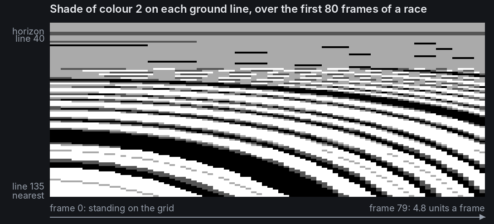
In the above space-time figure: each column is one frame, each row one scanline. Stripes are flat while the player waits for the race to begin, then they tilt as the car accelerates. Every stripe is a single building moving slowly, and then faster, from the horizon to the racer.
| Band | Screen lines | Depth (units) | One table entry | Blur window |
|---|---|---|---|---|
| Near0 | 109-135 | 173-238 | 1 unit | none |
| Near1 | 89-108 | 241-333 | 1 unit | 5 |
| Near2 | 75-88 | 340-462 | 1 unit | 11 |
| Near3 | 65-74 | 475-640 | 1 unit | 21 |
| Far0 | 51-64 | 666-1387 | 16 units | avenues only |
| Far1 | 43-50 | 1513-4160 | 16 units | districts only |
| Far2 | 40-42 | 5547-16640 | static | haze |
For very far parts of the city, each line covers so many units of distance that reading a sharp table would shimmer. This was analogous to the problem in 3D graphics where high resolution textures that covered a small number of pixels would shimmer and flicker as details somewhere within the texture were sampled rather than overall colors. To address this in 3D graphics, a technique called mipmapping was invented. Effectively the texture itself was prescaled by each power of two, and the texture size with the best resolution for the size of the triangle was selected to render the triangle. The cost for using this was only 33% more texture memory due to the fact that both width and height were scaled by half for each texture, and it also resulted in much higher cache hit rates for rendering those distant triangles as nearby texels on the correctly-sized texture would be chosen for adjacent pixels on the smaller triangles. F-Sub employs a similar approach: the tables' bands use mipmapping for farther lines. Effectively the bands farther out read a pre-blurred copy of the strip.
Markings painted across the entire road (the finish line, dash plates and jump plates) use the same idea on color 1. Fading out and back in is nearly free too: darker copies of every table sit right after it.
- To reuse: decide which color numbers animate, write a 1-D strip of what the world looks like along the travel axis, precompute each line's depth, and index with position + depth.
Bends from scroll (SCX)
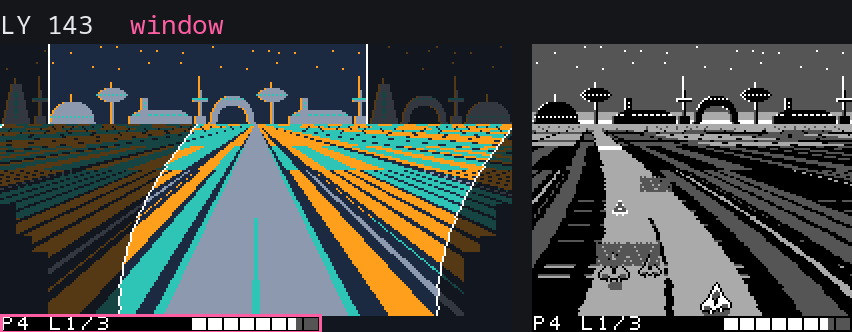
SCX is the background's horizontal scroll register. Like the palette, it is usually set once per frame; in F-Sub, every scanline gets its own value. The animation shows a frame as it is drawn. The left figure illustrates the tilemap, and the current line's 160-pixel slice in orange. The right figure shows the picture as it renders to the LCD.
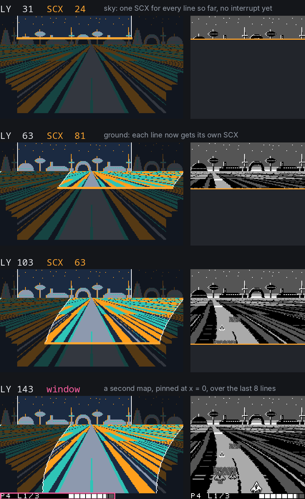
Stills from the same race. SCX is 24 for the sky, jumps to 98 on the first ground line, and curves back to 59 at the bottom.
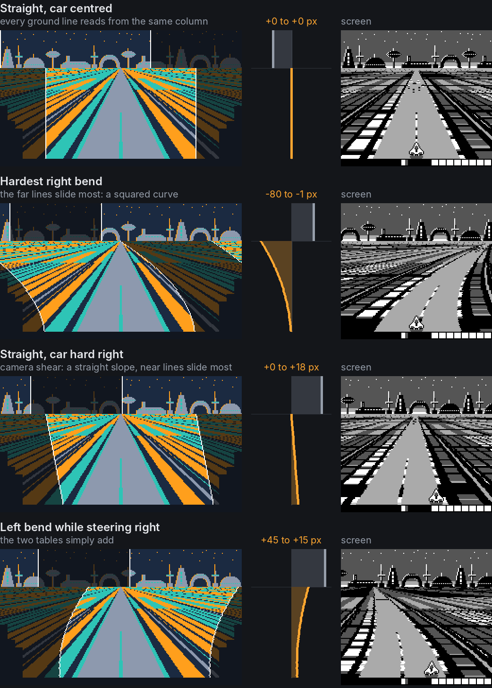
The scroll is nonlinear. This is accomplished with a pair of tables. The bend table is zero at the bottom of the screen and grows with the square of the distance up the screen, so it is largest at the horizon. The near road stays under the car while the far end curves away.
d = 1 at the horizon, 104 at the bottom
For steering, the opposite case is true. Moving the camera sideways slides near lines a lot and the horizon not at all. That is a shear, and it is all a sideways camera move needs.
s = −20 … 20 pixels
On a straight with no corner in sight, if neither the bend nor the camera has changed since a buffer was last filled, the fill is skipped. Each buffer keeps a two-byte note of what it was built for. The camera follows the car halfway, and the car's sprite moves the rest of the way by changing its x position in OAM. The sprites need to stay on the visual road, despite any curve. So rivals and road objects compute their screen x as 128 + lane offset on that line − SCX of that line.
- To reuse: split a camera move into per-line offsets and precompute each as a small table (levels x lines). Curvature wants far lines to move most; lateral camera motion wants near lines to move most. Add them and write the sum to the scroll register each line.
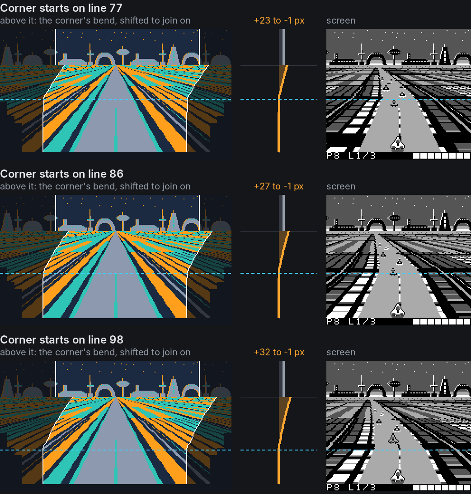
When playing the version with gradual curves, my son remembered the SNES F-Zero and said a corner should show up as a bend on the horizon, arrive so you brake a little and turn, and then be gone again. Long sweeping bends didn't give that feeling. So now corners show up before they arrive. Looking up to eight chunks ahead, the game finds the first chunk whose bend differs from the one the car is in, and works out which screen line that boundary falls on.
Lines beyond the boundary are drawn with the corner's bend and the rest with the bend the car is in. The far part is then shifted sideways by the difference between the two on the boundary line, so the pieces join. The physics only pushes the car according to the bend of the chunk it is in, but the player gets a warning as the corner comes down the screen.
It doesn't need any loop logic either. The 96-line fill is one long unrolled run of code that ends in ret. To fill only the last n lines, the game pushes the address to come back to, computes where line n from the end starts, pushes that afterwards, and executes ret to jump in.
- To reuse: to draw two curves on one road, render each from its own table and offset the far one so the seam is continuous. Fully unrolled loops can serve any length if you can jump into the middle of them.
The skyline
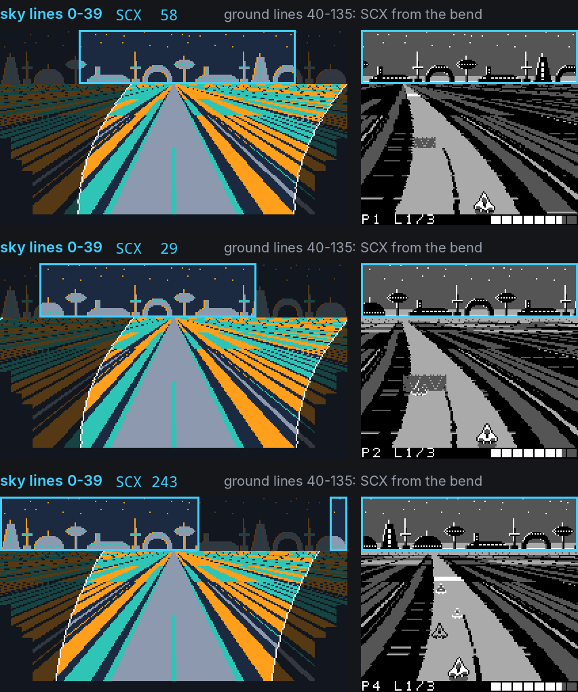
The Game Boy has a single background layer, so the skyline is simply the top 40 lines of the same tilemap the road is baked into. It only looks like a separate concept due to the discontinuity in the SCX scroll value for those top lines.
The sky's scroll comes from a running "heading" value. Each frame the heading has (bend - 32)·speed added to it. It is scaled so that a 90-degree corner moves the skyline a quarter of its width.
The skyline changes view while the hovercraft is turning and moves faster as the hovercraft accelerates. It's effectively a compass that helps players keep track of which way they are facing on the course. The cyan box in the picture is the sky's slice of the map.
Each track loads its own skyline tiles into fixed "sky slots" and its own 40-line sky palette; the ground tiles never change between tracks.
- To reuse: parallax does not need layers. Any band of scanlines can have its own scroll; give the far band a slow accumulated value and the near band the fast one.
One frame, scanline by scanline
A frame is 154 scanlines. 144 of these are drawn, and 10 of these consist of the vertical blank. Each line lasts 114 machine cycles, so the whole frame has 17,556 machine cycles for the simulation, the graphics and everything else in the game. For organization purposes, the screen is divided into zones purely based on when registers are written: sky (lines 0-39), ground (40-135), status bar (136-143).
The per-line handler is the most expensive computational piece of F-Sub. Its common path is 54 cycles, nearly half a scanline. The first version ran the handler on all 144 lines, but that idea took 40% of the CPU available, leaving very little for the game itself. F-Sub bought back some time by skipping the top of the sky. Lines 0 to 31 share one palette and one scroll, so VBlank loads them once and sets up an LY = LYC interrupt for line 31; from there the handler runs on every line to the bottom of the screen.
- To reuse: per-line interrupts are a tax on every line for which they fire.
The interrupt handler
; fzero.asm, common path (comments added)
SECTION "stat vector", ROM0[$48] ; the handler sits AT the vector: no jp
StatISR:
push af
push hl
ldh a, [rLY]
inc a
ld l, a ; L = the line about to be drawn
ldh a, [hFront]
ld h, a ; H = first page of the live buffer
ld a, [hl]
ldh [rBGP], a ; palette: forward motion
inc h
ld a, [hl]
ldh [rSCX], a ; scroll: bend and steering
inc h
ld a, [hl]
ldh [rOBP1], a ; sprite palette: rival paint
ld a, l
and %00011111 ; only lines 32 and 64 have extra work
jr z, .event
pop hl
pop af
retiThe per-line handler doesn't compute anything, instead reading bytes from buffers and writing them to the associated BGP, SCX, and OBP1 registers.
All the tables are 256-byte aligned. The 16-bit hl register holds separately writable high and low bytes.
The line number is the low byte of the address, and inc h adds one to the high byte, which moves the address exactly 256 bytes on, to the next register's table. This avoids pointer arithmetic and saves compute on the critical path. There are two sets of these three buffers. The main loop fills whichever is not on screen and writes its page number in the hReady global. VBlank copies the value to hFront. The analogy here is double buffering: we have a front and back buffer for registers instead of pixels.
To avoid displaying half-ready frames, if the code was unable to complete in time, the hReady flag will remain zero at VBlank and the previous frame's values will be recycled for the next frame.
The VBlank period is the narrow window in which F-Sub can update the sprites. The main loop stages them in a RAM copy of OAM during the frame, and VBlank sends them over by DMA.
A few more tricks keep the handler instruction count down. It is positioned right at the interrupt's own address and paves over the addresses of three interrupts F-Sub never uses (timer, serial and joypad), saving 4 cycles on each of its 114 runs a frame. It only has two once-a-frame jobs, switching to HBlank interrupts at line 32 and switching tile blocks at line 64, and both of those line numbers end in five zero bits. This allows a quick bit test to find them. And the original Game Boy has a quirk where writing to STAT can itself fire a STAT interrupt, so the handler checks it hasn't already switched, and the buffers keep harmless copies of line 0's values just past the bottom of the screen in case a stray interrupt reads them.
Waiting for VBlank needs care. The main loop checks its flag with interrupts off, then executes ei + halt. ei takes effect one instruction late, so VBlank can't slip in between the check and the halt. If it could, the CPU would sleep straight through it until the line-31 interrupt, and the frame would be lost.
- To reuse: move every decision out of the per-line handler. Precompute a table per register, page-align them, index by line, double-buffer, and swap in VBlank.
The status bar is a window
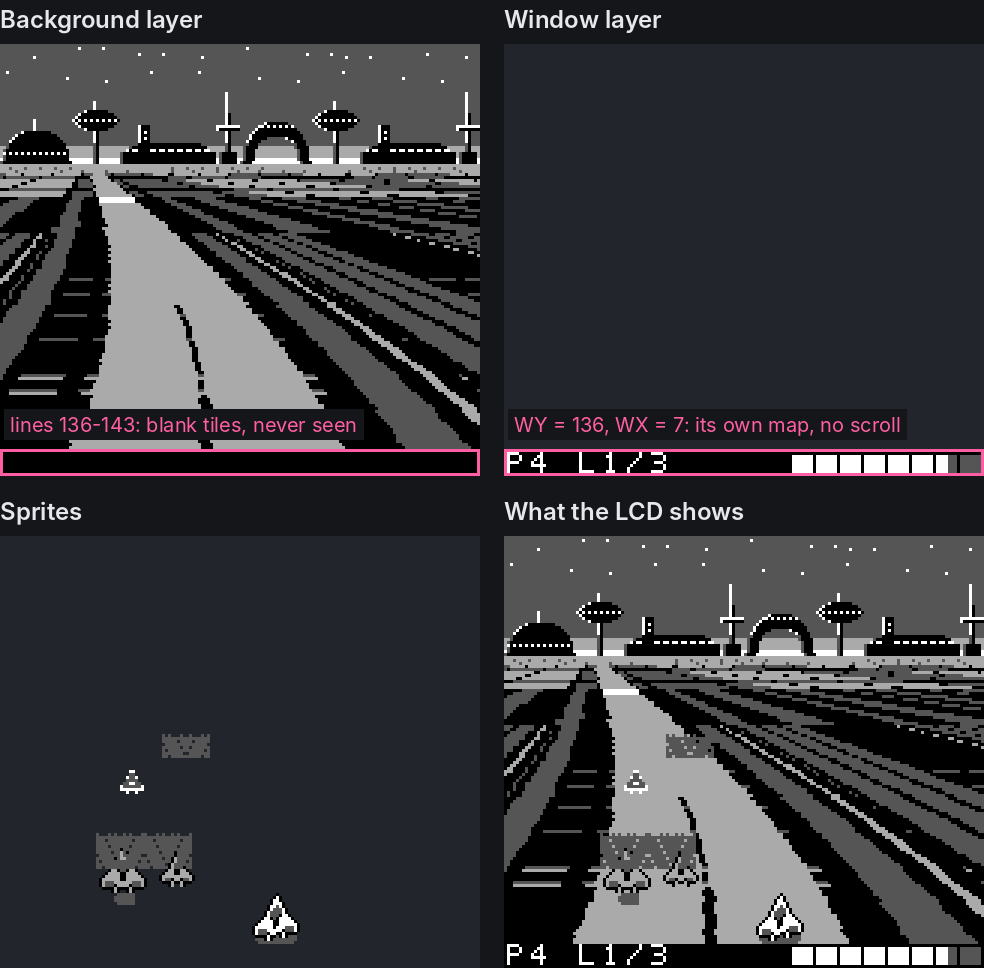
The Game Boy's "window" is a second tilemap the hardware draws over the background from a chosen line (WY) and column (WX) onward. The window has no scroll register. Starting at line 136 the LCD stops reading the road's tilemap and reads 20 tiles from the window's map instead. Its palette still comes from the line buffer.
Entries 136-143 of the BGP page hold the bar's own palette, and a new lap flashes the bar in negative for two seconds by inverting the eight bytes every 8 frames. No tile has to change for the flash: it is purely a palette effect. The status bar's 20 tiles are staged in RAM and copied over in VBlank only when something on it (place, lap, health, boosts or countdown) changes.
Every-other-frame drawing
The per-line handler takes about 35% of the CPU, which leaves the main loop around 11,400 machine cycles a frame for everything else: the physics, 96 palette lookups, 96 scroll sums, seven rivals, two road objects, the status bar, the music and, in two-player mode, the link cable. Moving and drawing seven rivals 60 times a second did not fit.
Instead, each rival is moved and redrawn only every other frame, covering two frames of travel in a single step. Even-numbered cars update on even frames and odd-numbered cars on odd frames, which comes down to testing bit 0 of frame XOR car number. This works because a sprite stays where it is in OAM, the hardware's list of sprites, until something moves it. A resting car costs nothing and simply holds its place for one more frame. The captured OAM shows it: cars 0, 2, 4 and 6 change on one frame, and cars 1, 3 and 5 on the next. It is hard to notice in play, because a rival's motion on screen comes from its speed relative to yours, which is small for most of a race.
The one thing that can't rest is a rival's paint. Its sprite palette value lives in the line buffer, and the two buffers take turns, so a resting rival's paint is reapplied every frame from a single remembered byte: the line its sprite sits on.
Once the rivals were split up, the same idea spread to the rest of the frame. Rivals are painted far to near, so the nearer car's paint wins on shared lines, and that order is kept by comparing only one neighboring pair each frame. It is a bubble sort spread out over time, and it only has work to do when someone overtakes. Scenery looks up one of its seven distance bands per frame and the eighth frame checks for a roof, so a change takes up to eight frames to settle, which nobody sees because it arrives from the horizon anyway. Work is skipped when nothing has changed: the scroll fill when the bend and camera match the note left in that buffer, the sky's 40 palette lines once three frames have passed since they changed (enough to reach both buffers), and the status bar unless something on it changed. The explosion's noise is only redrawn every fourth frame.
Sprites were budgeted the same way. A full-size rival is three sprites rather than four, with a single piece of shadow under the middle, so seven rivals use 21 sprite entries. With the player's 4 and 10 for the two road objects, that comes to 35 of the hardware's 40, so nothing ever has to flicker. On the current ROM the peak load is 78–83% across the four tracks, with no dropped frames.
- To reuse: ask of every job whether it needs 60 Hz. Stagger what can run at 30 Hz or slower, amortize sorting over frames, and remember what each buffer was built from so unchanged work can be skipped.
Liveries are palettes
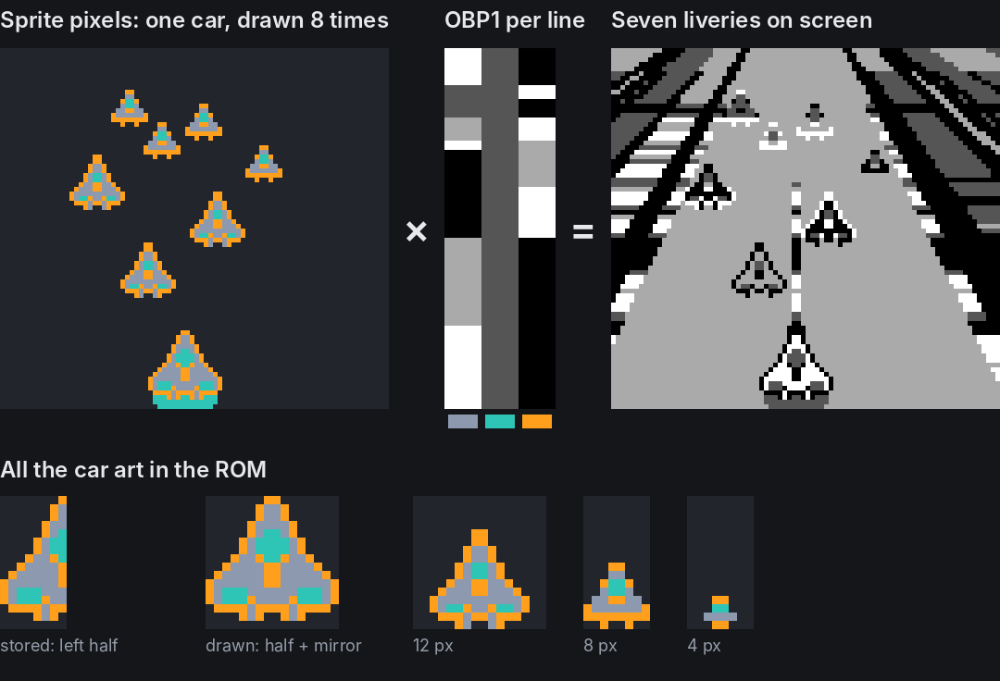
- The Game Boy gives sprites two palettes. The player's car uses OBP0, which is fixed. Every rival is flagged for OBP1, and OBP1 is the third register the per-line handler rewrites.
- So a rival's livery is not art. It is one byte written into the line buffer on the scanlines that car occupies. Seven liveries, one set of tiles, one palette register.
- Where two rivals overlap vertically, the shared scanlines take the nearer car's paint (they are painted far to near), so the further car shows the wrong livery on just those lines. That is the cost of the trick.
- Color 2 stays dark gray in every livery so the shadow under each car still looks like a shadow.
- All the car art is half a car: one 8x16 sprite, drawn twice with the second copy mirrored. Leaning into a turn is free: the two halves are drawn one pixel apart vertically.
- Distant rivals use 12, 8 and 4-pixel versions that the Python generator makes by shrinking the same drawing with a majority vote that favors the outline.
- Boost pads and recharge patches reuse the trick: they are the dirt patch's tiles under an OBP1 value that flickers or pulses on their lines.
- To reuse: if palette registers can change per line, anything separated vertically can have its own colors. Sort by depth so overlaps resolve the way the eye expects.
384 tiles from a 256-tile background
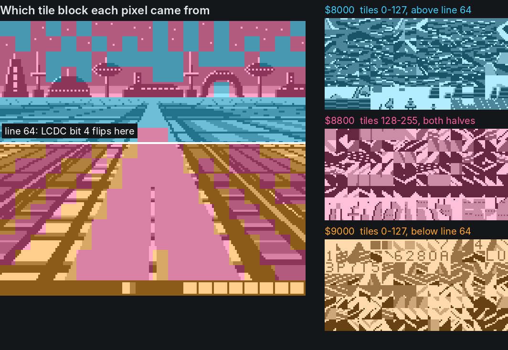
- A background tile number is one byte, so a picture can name 256 tiles. But one LCDC bit chooses whether numbers 0-127 are read from $8000 or from $9000 (128-255 always come from $8800).
- The per-line handler flips that bit at line 64. The top of the picture then draws from $8000 + $8800 and the bottom from $9000 + $8800: 384 tiles for one image.
- The generator sorts tiles by where they are used. Only above the split: $8000. Only below: $9000. Both: $8800. For the ground that is 94 + 128 + 96 tiles.
- What is left over, 36 slots in the upper and shared blocks, is where each track's skyline loads (the Neo City skyline uses all 36). Thirty tiles at the end of $8000 are kept for sprites, which cannot read the $9000 block. All 384 are spoken for.
- The menu's alphabet costs no tiles: it is loaded into the skyline's slots while the menu is up, and the generator emits a
CHARMAPsodb "TRACK"assembles straight to those tile numbers. - The split sits at line 64 because the handler can find that line with the same mask test it uses for line 32.
- To reuse: a mid-frame LCDC write buys 128 extra background tiles for any tall static picture. Let a script do the packing.
Scenery, tunnels and fades are palette tables
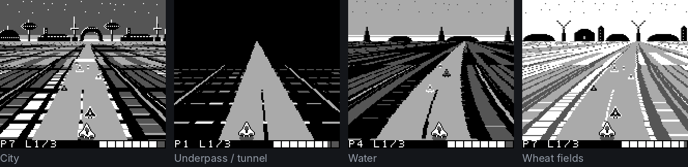
- The four pictures differ only in which palette tables the seven distance bands read (and, across tracks, the skyline tiles). The ground tilemap is byte-identical on all four tracks.
- Each chunk of the lap names a scenery. Each band looks up the scenery of the chunk it is over, so new scenery rolls in from the horizon rather than popping.
- The tunnel short cut is the same road with black walls and ribs of light sweeping past: another table set, plus the sky lines forced to black. Its entrance is a sprite that grows through three sizes as it approaches.
- Taking the tunnel runs a 64-frame fade: out, a switch of track branch half way while the screen is black, and back in. The fade is free: darker copies of every table sit on the following pages.
- To reuse: a new environment can be a new set of 256-byte tables rather than new art. Store fade steps as extra copies and select them by adding to the page number.
An explosion drawn into a tile
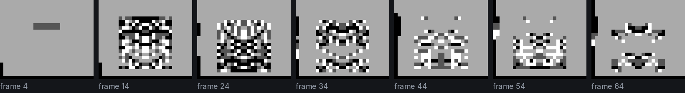
- This is the one place the game writes tile data during play. A wrecked car's sprite is pointed at a spare tile, and VBlank overwrites that tile's 32 bytes with noise.
- The noise is an 8-bit shift register (shift right, XOR with $B8 on carry). After the half-way point each byte is ANDed with a rotated copy of itself so the cloud thins, then it clears.
- A new frame of noise is written every fourth frame. The explosion is symmetrical because the car is: it is still one half-sprite and its mirror.
- The spare tile is the small shadow's; it is copied back from ROM when the next race starts.
- To reuse: procedural animation can live in a single tile. Point a sprite at it and rewrite a few bytes in VBlank.
A link cable with no interrupts
Two-player mode doesn't share a simulation. Each console runs its own car and two rivals and tells the other console where they are, and the other console draws them a few frames late. Your own car is never delayed by the cable.
The serial port is polled and never interrupt-driven. A serial interrupt that landed just before HBlank would delay the palette write and tear the picture, and its vector sits underneath the HBlank handler anyway. Polling means calling LinkPump often: after the physics, during the palette and scroll fills, once per rival, and after the status bar and the music. Linked consoles also skip halt and keep pumping while they wait for VBlank.
The game host leaves 2 ms between bytes so the other side has time to notice each one and load the next. It times the gap with the hardware timer used as a stopwatch: it sets the counter to 248 when a byte completes, and sends the next one once a plain read shows the counter has wrapped. The timer interrupt stays off.
Framing heals itself. Data bytes only carry 7 bits, so the sync byte is the only one with bit 7 set, and the game client can always realign on it. A packet with a bad 7-bit checksum is dropped, and 180 frames without a good one drops the link. Every packet carries the player's position, and that console's two rivals take turns, one per packet. One bit in the sync byte flips when a player restarts the race, so the other console sees the flip and restarts too. The console that pressed Start picks the track, and the other loads it.
The other player isn't in a lane, so their x position has to be scaled for perspective. The camera's shear tables already hold x·d/104 for every line, so F-Sub reuses them as a multiplication table. They are generated two steps wider than the camera needs, so they reach a car right at the rail, and a check at build time keeps it that way. All of this is tested without hardware: tools/linktest.c runs two SameBoy emulator cores joined by an emulated cable and checks that each console sees the other where it really is.
Python writes the tables, bots check the budget
A track is a 512-byte block holding the bend, rival pace, hazards, scenery and crosswind for each of its 64 chunks. It is copied into RAM when the track is chosen, so the game code reads the same addresses whatever the track may be. Tracks are written as straights and corners, like ("S", 6), ("R", 16, 1), and the generator refuses any lap that isn't 64 chunks, doesn't turn exactly once around, or puts opposite corners back to back without a straight between them. Rival pace is customized to each track: gen_tracks.py computes how fast a good driver can take each corner from its bend and length, using the game's own push formula, and runs the field flat out on the straights.
Screenshot gallery
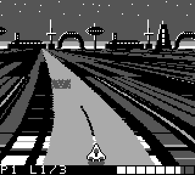
- Above: 4.7 seconds of Neo City, the left-hander onto the causeway over the water, taken from the emulator (every second frame of 280).
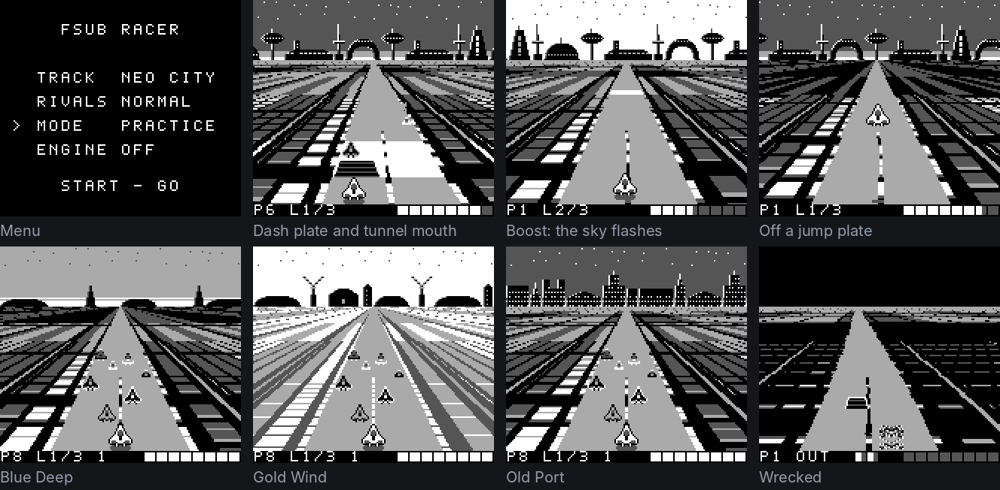
- Menu: white lettering loaded into the skyline's tile slots.
- Dash plate and tunnel mouth: the white band is two palette bits on the lines that stretch of road covers; the ramp is a sprite.
- Boost: the sky's 40 palette lines swap to a white table for a few frames.
- Jump: the car rises off its shadow, which stays on the road and shrinks.
- Blue Deep, Gold Wind, Old Port: same ground tilemap, different skyline tiles and palette tables.
- Wrecked: the car's sprite is the noise tile; the status bar reads OUT.